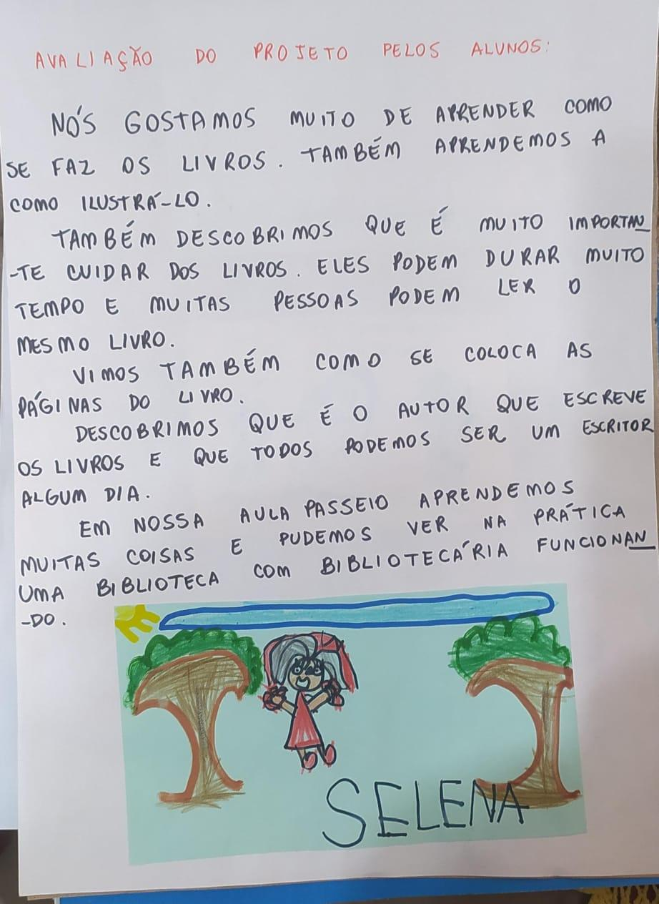

“As palavras ensinam, mas os exemplos arrastam.” Este é um antigo provérbio atribuído a Confúcio, o qual se aplica nas nossas atitudes quando somos referência para aqueles que nos cercam.
Com certeza vejo isso refletido em meu trabalho em sala de aula. Sou apaixonada por literatura infantil, tenho meus livros preferidos e estou sempre aberta a novidades, quero sempre ler mais para conhecer e expandir conhecimentos e minha lista de favoritos.
Como passo isso para os alunos, variando os gêneros, utilizando diferentes estratégias de contação de histórias, as crianças da turma da tarde já estão fazendo seus próprios livros. E o legal é que não fui eu que incentivei. Somente oportunizei que todos os dias os ajudantes participassem da roda de histórias escolhendo um dos livros do cantinho da leitura para contarem. Como mais crianças queriam participar, traziam livros de casa. Como hoje em dia as crianças não têm muito acervo em casa, começaram a criar seus próprios livros para trazer e compartilhar a história com os colegas. Foi uma grande surpresa para mim. Começou com uma amiga e agora já tem muitos fazendo e criando seus próprios livros em casa e na atividade independente.
De manhã também este é o cantinho mais procurado, tanto que tive que ofertar mais mesas para atender a demanda. Mas as histórias criadas estão vindo ainda em forma de cartaz e ainda não de livro. Estou pensando em compartilhar as ideias de uma turma com a outra porque vai ser muito significativo a eles.
Este foi um dos trechos de meus relatos semanais, onde a Supervisora Carol leu e sentiu que este seria um ótimo tema para nosso projeto em sala de aula.
Como uma das propostas de nossa rotina semanal é a “hora da leitura”, feita diariamente para as crianças, tendo a professora como uma contadora de estórias de variados gêneros textuais, desde o início do ano percebi o grande interesse que a maioria das crianças tem por esse momento. O momento da leitura “é sagrado” e a maioria das crianças consegue se envolver no mundo de fantasia que a leitura nos oferece. No momento do conto, a cada página contada, os olhinhos atentos fazem o momento da história sempre ter “o sabor de quero mais”!
Diante destes fatos, procurei desenvolver no final do primeiro e início do segundo semestre o projeto “Contadores de História”, cujo objetivo central é o reconto das histórias preferidas pelas crianças. Acreditando que o reconto de histórias pode desenvolver a linguagem oral e escrita, bem como promover a imaginação e a fantasia, aspectos inerentes ao universo infantil e à reflexão de valores, procurei incentivar as crianças a envolver-se ainda mais neste universo tão intrigante que é o mundo da leitura!
Aliando a esta proposta, pretende-se também com este projeto avançar nos níveis de aquisição da linguagem escrita e o desenho, associando com a escrita de histórias de repertório autoral, como o livro da vida.
A leitura é uma prática que traz inúmeros benefícios aos leitores e, quando estimulada desde a infância, os impactos positivos podem ser muito maiores. Por meio dela, as crianças desenvolvem a concentração, memória, raciocínio e compreensão, estimulam a linguagem oral e ampliam a capacidade criativa.
“Acessar o universo das histórias ativa a imaginação, amplia o repertório de mundo e cria condições favoráveis para as crianças lidarem com situações cotidianas sob diferentes perspectivas. É pela linguagem que elas se conectam com o mundo e é por meio das histórias que expressam as descobertas e os aprendizados, construindo a identidade e a memória. A literatura estimula muito o desenvolvimento dos pequenos”, explica Glaucia Piva, psicopedagoga.
Os benefícios se estendem para o fortalecimento de vínculos afetivos, quando o momento é compartilhado, e para as habilidades socioemocionais, uma vez que, por meio da leitura, as crianças começam a entender seus sentimentos e a tentar lidar com eles.
“Às vezes ela tem uma angústia, leva com ela algo que não sabe sequer nomear, mas quando lê, ela consegue elaborar a dúvida, se identificar com o personagem e fazer conexões propiciadas pela própria trama”, relata Glaucia.
Apesar de compor a rotina de aprendizagem da criança, estimular a leitura não é uma tarefa apenas escolar. Tanto a família quanto a escola possuem funções diferentes, porém complementares nesta etapa.
Objetivo
O objetivo deste trabalho foi desenvolver a linguagem oral e escrita das crianças dentro de um contexto investigativo.
Os Objetivos específicos foram:
Objetivos de desenvolvimento e aprendizagem da BNCC
Objetivos do PROEPRE – Currículo Municipal de Guaxupé-MG
(EI03CG01). Criar com o corpo formas diversificadas de expressão de sentimentos, sensações e emoções, tanto nas situações do cotidiano quanto em brincadeiras, dança, teatro, música.
(EI03CG02). Demonstrar controle e adequação do uso de seu corpo em brincadeiras e jogos, escuta e reconto de histórias, atividades artísticas, entre outras possibilidades.
(EI03TS03). Reconhecer as qualidades do som (intensidade, duração, altura e timbre), utilizando-as em suas produções sonoras e ao ouvir músicas e sons.
(EI03CG05). Coordenar suas habilidades manuais no atendimento adequado a seus interesses e necessidades em situações diversas.
(EI03EO01). Demonstrar empatia pelos outros, percebendo que as pessoas têm diferentes sentimentos, necessidades e maneiras de pensar e agir.
(EI03EO02). Agir de maneira independente, com confiança em suas capacidades, reconhecendo suas conquistas e limitações.
(EI03EO03). Ampliar as relações interpessoais, desenvolvendo atitudes de participação e cooperação.
(EI03EO04). Comunicar suas ideias e sentimentos a pessoas e grupos diversos.
(EI03EO05). Demonstrar valorização das características de seu corpo e respeitar as características dos outros (crianças e adultos) com os quais convive.
(EI03EO06). Manifestar interesse e respeito por diferentes culturas e modos de vida.
(EI03EO07). Usar estratégias pautadas no respeito mútuo para lidar com conflitos nas interações com crianças e adultos.
(EI03TS01). Utilizar sons produzidos por materiais, objetos e instrumentos musicais durante brincadeiras de faz de conta, encenações, criações musicais, festas.
(EI03TS02). Expressar-se livremente por meio de desenho, pintura, colagem, dobradura e escultura, criando produções bidimensionais e tridimensionais.
(EI03TS05). Reconhecer e ampliar possibilidades expressivas do seu corpo por meio de elementos da dança.
(EI03EF01). Expressar ideias, desejos e sentimentos sobre suas vivências, por meio da linguagem oral e escrita (escrita espontânea), de fotos, desenhos e outras formas de expressão.
(EI03EF02). Inventar brincadeiras cantadas, poemas e canções, criando rimas, aliterações e ritmos.
(EI03EF03). Escolher e folhear livros, procurando orientar-se por temas e ilustrações e tentando identificar palavras conhecidas.
(EI03EF04). Recontar histórias ouvidas e planejar coletivamente roteiros de vídeos e de encenações, definindo os contextos, os personagens, a estrutura da história.
(EI03EF05). Recontar histórias ouvidas para produção de reconto escrito, tendo o professor como escriba.
(EI03EF06). Produzir suas próprias histórias orais e escritas (escrita espontânea), em situações com função social significativa.
(EI03EF07). Levantar hipóteses sobre gêneros textuais veiculados em portadores conhecidos, recorrendo a estratégias de observação gráfica e/ou de leitura.
(EI03EF08). Selecionar livros e textos de gêneros conhecidos para a leitura de um adulto e/ou para sua própria leitura.
(EI03EF09). Levantar hipóteses em relação à linguagem escrita, realizando registros de palavras e textos, por meio de escrita espontânea.
(EI03ET04). Registrar observações, manipulações e medidas, usando múltiplas linguagens (desenho, registro por números ou escrita espontânea), em diferentes suportes.
(EI03ET06). Relatar fatos importantes sobre seu nascimento e desenvolvimento, a história dos seus familiares e da sua comunidade.
(EI03ET09MG). Desenvolver noções espaço-temporais.
Desenvolvimento
O projeto investigativo contou com as seguintes etapas a fim de iniciar a investigação e responder aos questionamentos levantados pelas crianças:
Durante o projeto também realizamos atividades como:
A avaliação ocorreu durante todo o processo, com foco no interesse, participação, envolvimento, interação e reflexão em grupo. Observações diárias também fizeram parte, com ajustes ao longo do percurso.
A seguir, o registro da avaliação do percurso feito pelas crianças:
Conclusões
“A leitura é uma prática que traz inúmeros benefícios aos leitores e quando estimulada desde a infância os impactos positivos podem ser muito maiores. Por meio dela, as crianças desenvolvem a concentração, memória, raciocínio e compreensão, estimulam a linguagem oral e ampliam a capacidade criativa. Antes mesmo de aprender a ler e a escrever, existe uma criança que explora o mundo da escrita e pensa ativamente sobre ele. A criança é, naturalmente, interessada pelo universo letrado, pelo que ouve e pelo que vê. Compreender o que está escrito é um longo caminho, e esse trajeto precisa ser prazeroso.”
E foi o que oportunizamos em nosso projeto! Não só descobertas e aprendizados com relação à leitura e à escrita, mas abrangendo todos os direitos de aprendizagem, campos de experiências e aspectos do conhecimento. Tudo de forma lúdica e significativa, explorando e realizando experiências concretas para que se envolvessem ativamente — e foi isso que conseguimos de cada uma das crianças. Muito aprendizado, experiências, brincadeiras, jogos, atividades e desenvolvimento!
O projeto foi um sucesso, já que partiu deles, então ficaram motivados até o final. Durante o projeto desenvolvemos atividades em que foi possível perceber e avaliar não só a escrita e a leitura como também a linguagem oral e todos os aspectos do conhecimento, campos de experiências e direitos de aprendizagem, pois as propostas extrapolaram o projeto e adentraram outros conhecimentos.
A aula-passeio até a biblioteca da Escola Interativa foi muito significativa, pois as crianças puderam ver na prática uma biblioteca funcionando com seu profissional especializado. As rodas de conversa, que fazem parte do nosso dia a dia, permearam todo o projeto, sendo um momento que garante a participação de cada criança. Elas desenvolvem a linguagem e a escuta ao expressarem suas ideias e vivências e, com isso, reconhecem o outro com seu próprio ponto de vista e singularidade.
A escolha do nome do projeto foi fundamental para a identidade que estava sendo construída, fortalecendo o espírito coletivo e a integração do grupo. O nome partiu das crianças. Fizemos uma roda de discussão para que todos pudessem dar sua opinião. Registrei todas as ideias e depois as crianças votaram. De manhã escolheram: “Viajando no mundo das maravilhas” e à tarde: “Livro Feliz”.
O método de investigação possibilitou a participação efetiva dos alunos em busca das respostas às questões e hipóteses por eles levantadas. As observações e vivências possibilitaram a ampliação de conhecimentos. A realização deste projeto atingiu todos os objetivos iniciais, como também respondeu às questões inicialmente levantadas. Notamos que a curiosidade das crianças foi aguçada, pois participaram ativamente de todas as atividades propostas, e foram os verdadeiros protagonistas do projeto.
Este projeto teve resultados satisfatórios. O planejar, o pesquisar, o refletir e o questionar foram atividades constantes, além de uma incansável busca por novos conhecimentos. Os registros das crianças em diferentes linguagens propiciaram um aprendizado prazeroso e significativo.
Trabalhar com o método investigativo tornou a aprendizagem muito mais eficaz, pois paulatinamente as crianças foram construindo seu conhecimento. A utilização do método foi gratificante, enriquecedora e significativa. Uma das principais contribuições é a possibilidade de proporcionar uma aprendizagem com os alunos sempre em ação, sendo protagonistas e construtores do próprio conhecimento, favorecendo autonomia, evolução e desenvolvimento.
Durante o registro nos cartazes, os alunos puderam refletir sobre a escrita das palavras, suas hipóteses, direcionalidade do texto, tipologia textual, entre outros fatores que contribuíram positivamente nas avaliações diagnósticas finais. O contato com diferentes tipos de textos despertou a curiosidade das crianças pelo mundo letrado.
Este projeto desenvolveu inúmeros conhecimentos e ampliou o trabalho com campos de experiências. As atividades, observações e pesquisas podem ser vistas no Portfólio do Projeto, evidenciando o desenvolvimento alcançado.
A interação entre alunos, professora e demais envolvidos permitiu troca de conhecimentos, construção coletiva e exposições das conclusões obtidas. O resultado final ultrapassou a expectativa inicial de um único livro — as crianças quiseram fazer mais, o que mostrou o envolvimento prazeroso com o projeto.
Livros produzidos:
Gratidão a toda equipe diretiva e pedagógica, colaboradores, auxiliares, ao auxiliar João Pedro, familiares e professores que contribuíram com este trabalho. E, em especial, às crianças — verdadeiras protagonistas dessa jornada de aprendizagem leve, significativa e prazerosa.
O projeto foi extremamente gratificante, desenvolvido de forma lúdica e investigativa, favorecendo a aquisição de conhecimentos e desenvolvimento integral das crianças. Alcançamos, com sucesso, os objetivos traçados em conjunto por alunos e professora.
Referências bibliográficas